1과목: 재료역학
1. 5cm×4cm 블록이 x축을 따라 0.⑤cm만큼 인장되었다. y 방향으로 수축되는 변형률(Єy)은? (단, 푸아송 비(v)는 0.3이다.)
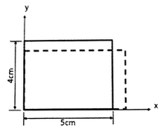
2. 그림과 같이 지름 d인 강철봉이 안지름 d, 바깥지름 D인 동관에 끼워져서 두 강체 평판 사이에서 압축되고 있다. 강철봉 및 동관에 생기는 응력을 각각 σs, σc라고 하면 응력의 미(σs/σc)의 값은? (단, 강철(Es) 및 동(Ec)이 탄성계수는 각각 Es=200GPa, Ec=120Gpa이다.)
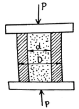
3. 동일 재료로 만든 길이 L, 지름 D인 축 A와 길이 2L, 지름 2D인 축 B를 동일각도만큼 비트는 데 필요한 비틀림 모멘트의 비 TA/TB의 값은 얼마인가?
4. 지름 d인 원형단면 기둥에 대하여 오일러 죄굴식의 회전반경은 얼마인가?
5. 지름 2cm, 길이 1m의 원형단면 외팔보의 자유단에 집중하중이 작용할 때, 최대 처짐량이 2cm가 되었다면, 최대 굽힘응력은 약 몇 MPa인가? (단, 보의 세로탄성계수는 200GPs이다.)
6. 지름 d인 원형 단면보에 가해지는 전단력을 V라 할 때 단면의 중립축에서 일어나는 최대 전단 응력은?
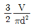
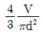
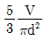
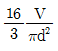
7. 오일러 공식이 세장비
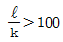
에 대해 성립한다고 할 때, 양단이 힌지인 원형단면 기둥에서 오일러 공식이 성립하기 위한 길이 “ℓ”과 지름 “d”와의 관계가 옳은 것은?8. 2축 응력 상태의 잴 내에서 서로 직각 방향으로 400MPa의 인장응력과 300MPa의 압축응력이 작용할 때 재료 내에 생기는 최대 수직응력은 몇 MPa인가?
9. 그림과 같은 벨트 구조물에서 하중 W가 작용할 때 P값은? (단, 벨트는 하중 W의 위치를 기준으로 좌우 대칭이며 0°<α<180°이다.
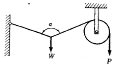
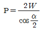
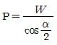
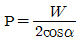
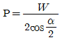
10. 그림과 같이 분포하중이 작용할 때 최대 굽힘모멘트가 일어나는 곳은 보의 좌측으로부터 얼마나 떨어진 곳에 위치하는가?
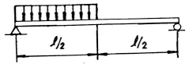
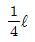
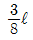
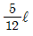
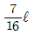
11. 그림과 같이 길이와 재질이 같은 두 개의 외팔보가 자유단에 각각 집중하중 P를 받고 있다. 첫째 보(1)의 단면 치수는 b×h이고, 둘째 보(2)의 단면치수는 b×2h라면, 보(1)의 최대 처짐 δ1과 보(2)의 최대 처짐 δ2의 비(δ1/δ2)는 얼마인가?
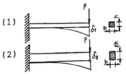
12. 어떤 직육면체에서 x방향으로 40MPa의 압축응력이 작용하고 y방향과 z방향으로 각각 10MPa씩 압축응력이 작용한다. 이 재료의 세로탄성계수는 100GPa, 푸아송 비는 0.25, x방향 길이는 200mm 일 때 x방향 길이의 변화량은?
13. 길이 L인 봉 AB가 그 양단에 고정된 두 개의 연직강선에 의하여 그림과 같이 수평으로 매달려 있다. 봉 AB의 자중은 무시하고, 봉이 수평을 유지하기 위한 연직하중 P의 작용점까지의 거리 x는? (단, 강선들은 단면적은 같지만 A단의 강선은 탄성계수 E1, 길이 ℓ1, B단의 강선은 탄성계수 E2, 길이 ℓ2이다.)
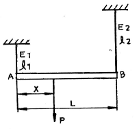
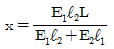
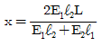
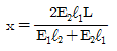
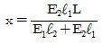
14. 지름 4cm의 원형 알루미늄 봉을 비틀림 재료시험기에 걸어 표면의 45°나선에 부착한 스트레인 게이지로 변형도를 측정하였더니 토크 120Nㆍm일 때 변형률 ε=150×10-6얻었다. 이 재료의 전단탄성계수는?
15. 그림과 같이 4kN/cm의 균일분포하중을 받는 일단 고정 타단 지지보에서 B점에서의 모멘트 MB는 약 몇 kNㆍm인가? (단, 균일단면보이며, 굽힘강성(EI)은 일정하다.)
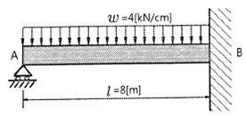
16. 회전수 120rpm과 35kW를 전달할 수 있는 원형 단면축의 길이가 2m이고, 지름이 6cm일 때 축단(軸端)의 비틀림 각도는 약 몇 rad인가? (단, 이 재료의 가로탄성계수는 83GPa이다.)
17. 균일분포하중을 받고 있는 길이가 L인 단순보의 처짐량을 δ로 제한한다면 균일 분포하중의 크기는 어떻게 표현되겠는가? (단, 보의 단면은 폭이 b이고 높이가 h인 직사가형이고 탄성계수는 E이다.)
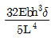
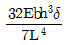
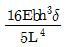
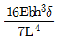
18. 단면적이 A, 탄성계수가 E, 길이가 L인 막대에 길이방향의 인장하중을 가하여 그 길이가 δ만틈 늘어났다면, 이 때 저장된 탄성변형 에너지는?
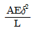
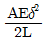
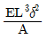
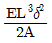
19. 지름이 1.2m, 두께가 10mm인 구형 압력용기가 있다. 용기 재질의 허용인장응력이 42MPa일 때 안전하게 사용할 수 있는 최대 내압은 약 몇 MPa인가?
20. 그림과 같은 단순보의 중앙점(C)에서 굽힘모멘트는?
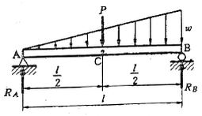
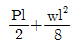
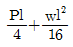
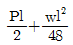
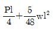
2과목: 기계열역학
21. 압력(P)과 부피(V)의 관계가 ‘PVk=일정하다’고 할 때 절대일(W12)와 공업일(Wt)의 관계로 옳은 것은?
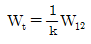
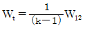
22. 분자량이 29이고, 정압비열이 10⑤J/(kgㆍK)인 이상기체의 정적비열은 약 몇 J/(kgㆍK)인가? (단, 일반기체상수는 8314.5 J/(kmolㆍK)이다.)
23. 다음 중 비체적의 단위는?
24. 성능계수가 3.2인 냉동기가 시간당 20MJ의 열을 흡수한다. 이 냉동기를 작동하기 위한 동력은 몇 kW인가?
25. 폴리트로픽 변화의 관계식 “PVn=일정”에 있어서 n이 무한대로 되면 어느 과정이 되는가?
26. 실린더 내의 공기가 100kPa, 20℃ 상태에서 300kPa이 될 때까지 가역단열 과정으로 압축된다. 이 과정에서 실린더 내의 계에서 엔트로피의 변화는? (단, 공기의 비열비 k=1.4이다.)
27. 5kg의 산소가 정압하에서 체적이 0.2m3에서 0.6m3로 증가했다. 산소를 이상기체로 보고 정압비열 Cp=0.92 kJ/(kgㆍK)로 하여 엔트로피의 변화를 구하였을 때 그 값은 약 얼마인가?
28. 이상적인 증기 압축 냉동 사이클의 과정은?
29. 고열원의 온도가 157℃이고, 저열원의 온도가 27℃의 카르노 냉동기의 성적계수는 약 얼마인가?
30. 0.6MPa, 200℃의 수증기가 50m/s의 속도로 단열 노즐로 유입되어 0.15MPa, 건도 0.99인 상태로 팽창하였다. 증기의 유출 속도는? (단, 노즐 입구에서 엔탈피는 2850kJ/kg, 출구에서 포화액의 엔탈피는 467kJ/kg, 증발 잠열은 2227kJ/kg 이다.)
31. 물질의 양에 따라 변화하는 종량적 상태량(extensive property)은?
32. 열역학적 관점에서 일과 열에 관한 설명 중 틀린 것은?
33. 그림과 같은 이상적인 Rankine cycle에서 각각의 엔탈피는 h1=168kJ/kg, h2=173kJ/kg, h3=3195kJ/kg, h4=2071kJ/kg일 때, 이 사이클의 열효율은 약 얼마인가?
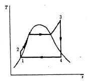
34. 다음에 제시된 에너지 값 중 가장 크기가 작은 것은?(오류 신고가 접수된 문제입니다. 반드시 정답과 해설을 확인하시기 바랍니다.)
35. 공기 표준 Brayton 사이클 기관에서 최고 압력이 500kPa, 최저압력은 100kPa이다. 비열비(k)는 1.4일 때, 이 사이클의 열효율은?
36. 피스톤-실린더 장치에 들어있는 100kPa, 26.84℃의 공기가 600kPa까지 가역단열과정으로 압축된다. 비열비 k=1.4로 일정하다면 이 과정 동안에 공기가 받은 일은 약 얼마인가? (단, 공기의 기체상수는 0.287 kJ/(kgㆍK)이다.)
37. 1kg의 기체가 압력 50kPa, 체적 2.5m3의 상태에서 압력 1.2MPa, 체적 0.2m3의 상태로 변하였다. 엔탈피의 변화량은 약 몇 kJ인가? (단, 내부에너지의 변화는 없다.)
38. 공기 1kg을 t1=10℃, P1=0.1MPa, V1=0.8m3상태에서 단열 과정으로 t2=167℃, P2=0.7MPa까지 압축시킬 때 압축에 필요한 일량은 약 얼마인가? (단, 공기의 정압비열과 정적비열은 각각 1.0035kJ/(kgㆍK), 0.7165kJ/(kgㆍK)이고, t는 온도, P는 압력, V는 체적을 나타낸다.)
39. 온도가 300K이고, 체적이 1m3, 압력이 1⑤N/m2인 이상기체가 일정한 온도에서 3×104J의 일을 하였다. 계의 엔트로피 변화량은?
40. 어느 이상기체 2kg이 압력 200kPa, 온도 30℃의 상태에서 체적 0.8m3를 차지한다. 이 기체의 기체상수는 약 몇 kJ/(kgㆍK)인가?
3과목: 기계유체역학
41. 잠수함의 거동을 조사하기 위해 바닷물 속에서 모형으로 실험을 하고자 한다. 잠수함의 실형과 모형의 크기 비율은 7:1 이며, 실제 잠수함이 8m/s로 운전한다면 모형의 속도는 약 몇 m/s인가?
42. 그림과 같이 45° 꺾어진 관에 물이 평균속도 5m/s로 흐른다. 유체의 분출에 의해 지지점 A가 받는 모멘트는 약 몇 Nㆍm인가? (단, 출구 단면적은 10-3m2이다.)
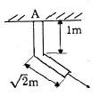
43. 주 날개의 평면도 면적이 21.6m2이고 무게가 20kN인 경비행기의 이륙속도는 약 몇 km/h 이상이어야 하는가? (단, 공기의 밀도는 1.2kg/m3, 주 날개의 양력계수는 1.2이고, 항력은 무시한다.)
44. 물이 흐르는 어떤 관에서 압력이 120kPa, 속도가 4m/s 일 때, 에너지선(Energy Line)과 수력기울기선(Hydraulic Grade Line)의 차이는 약 몇 cm 인가?
45. 뉴턴의 점성법칙은 어떤 변수(물리량)들의 관계를 나타낸 것인가?
46. 관로 내에 흐르는 완전발달 층류유동에서 유속을 1/2로 줄이면 관로 내 마찰손실수두는 어떻게 되는가?
47. 유체 내에 수직으로 잠겨있는 원형판에 작용하는 정수력학적 힘의 작용점에 관한 설명으로 옳은 것은?
48. 동점성 계수가 15.68×10-6m2/s인 공기가 평판 위를 길이 방향으로 0.5m/s의 속도로 흐르고 있다. 선단으로부터 10cm 되는 곳의 경계층 두께의 2배가 되는 경계층의 두께를 가지는 곳을 선단으로부터 몇 cm되는 곳인가?
49. 비중 8.16의 금속을 비중 13.6의 수은에 담근다면 수은 속에 잠기는 금속의 체적은 전체 체적의 약 몇 % 인가?
50. 그림과 같이 비중 0.85인 기름이 흐르고 있는 개수로에 피토관을 설치하였다. △h=30mm, h=100mm일 때 기름의 유속은 약 몇 m/s인가?
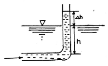
51. 안지름 0.25m, 길이 100m인 매끄러운 수평 강관으로 비중 0.8, 점성계수 0.1Paㆍs인 기름을 수송한다. 유량이 100L/s 일 때의 관 마찰손실 수두는 유량이 50L/s 일 때의 몇 배 정도가 되는가? (단, 층류의 관 마찰계수는 64/Re 이고, 난류일 때의 관 마찰계수는 0.3164Re-1/4이며, 임계레이놀즈 수는 2300이다.)
52. 일률(power)을 기본 차원인 M(질량), L(길이), T(시간)로 나타내면?
53. 그림과 같이 U자 관 액주계가 x 방향으로 등가속 운동하는 경우 x 방향 가속도 ax는 약 몇 m/s2인가? (단, 수은의 비중은 13.6이다.)
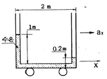
54. 지름이 2cm인 관에 밀도 1000kg/m3, 점성계수 0.4 Nㆍs/m2인 기름이 수평면과 일정한 각도로 기울어진 관에서 아래로 흐르고 있다. 초기 유량 측정위치의 유량이 1×10-5m3/s이었고, 초기 측정위치에서 10m 떨어진 곳에서의 유량도 동일하다고 하면, 이 관의 수평면에 대해 약 몇 °기울어져 있는가? (단, 관 내 흐름은 완전발달 층류유동이다.)
55. 원관(pipe) 내에 유체가 완전 발달한 층류 유동일 때 유체 유동에 관계한 가장 중요한 힘은 다음 중 어느 것인가?
56. 다음과 같은 수평으로 놓인 노즐이 있다. 노즐의 입구는 면적이 0.1m2이고 출구의 면적은 0.02m2이다. 정상, 비압축성이며 점성의 영향이 없다면 출구의 속도가 50m/s 일 때 입구와 출구의 압력차(P1-P2)는 약 몇 kPa인가? (단, 이 공기의 밀도는 1.23kg/m3이다.)
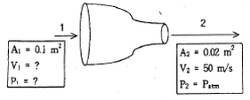
57. 절대압력 700kPa의 공기를 담고 있고 체적은 0.1m3, 온도는 20℃인 탱크가 있다. 순간적으로 공기는 밸브를 통해 바깥으로 단면적 75mm2를 통해 방출도기 시작한다. 이 공기의 유속은 310m/s이고, 밀도는 6kg/m3이며 탱크 내의 모든 물성치는 균일한 분포를 갖는다고 가정한다. 방출하기 시작하는 시각에 탱크 내의 밀도의 시간에 따른 변화율은 몇 kg/(m3ㆍs)인가?
58. 비점성, 비압축성 유체의 균일한 유동장에 유동방향과 직각으로 정지된 원형 실린더가 놓여있다고 할 때, 실린더에 작용하는 힘에 관하여 설명한 것으로 옳은 것은?
59. 다음 중 2차원 비압축성 유동의 연속방정식을 만족하지 않는 속도 벡터는?
60. 그림과 같은 밀폐된 탱크 안에 각각 비중이 0.7, 1.0인 액체가 채워져 있다. 여기서 각도 θ가 20°로 기울어진 경사관에서 3m 길이까지 비중 1.0인 액체가 채워져 있을 때 점 A의 압력과 점 B의 압력 차이는 약 몇 kPa인가?
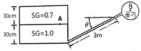
4과목: 기계재료 및 유압기기
61. 탄소를 제품에 침투시키기 위해 목탄을 부품과 함께 침탄상자 속에 넣고 900~950℃의 온도 범위로 가열로 속에서 가열 유지시키는 처리법은?
62. 베이나이트(bainite)조직을 얻기 위한 항온열처리 조작으로 가장 적합한 것은?
63. 면심입방격자(FCC) 금속의 원자수는?
64. 철과 아연을 접촉시켜 가열하면 양자의 친화력에 의하여 원자 간의 상호 확산이 일어나서 합금화하므로 내식성이 좋은 표면을 얻는 방법은?
65. 담금질 조직 중 가장 경도가 높은 것은?
66. 다음 중 금속의 변태점 측정방법이 아닌 것은?
67. Al에 10~13%Si를 함유한 합금은?
68. 다음 중 Ni-Fe계 합금이 아닌 것은?
69. 탄소강에서 인(P)으로 인하여 발생하는 취성은?
70. 구리합금 중에서 가장 높은 경도와 강도를 가지며. 피로한도가 우수하여 고급스프링 등에 쓰이는 것은?
71. 유압회로에서 캐비테이션이 발생하지 않도록 하기 위한 방지대책으로 가장 적합한 것은?
72. 유압 작동유의 점도가 너무 높은 경우 발생되는 현상으로 거리가 먼 것은?
73. 속도 제어 회로 방식 중 미터-인 회로와 미터-아웃 회로를 비교하는 설명으로 틀린 것은?
74. 다음 중 유량제어밸브에 속하는 것은?
75. 다음과 같은 특징을 가진 유압유는?
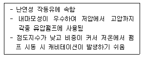
76. 다음 보기와 같은 유압기호가 나타내는 것은?
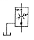
77. 채터링(chattering) 현상에 대한 설명으로 틀린 것은?
78. 베임 펌프의 1회전당 유량이 40cc일 때, 1분당 이론 토출유량이 25리터 이면 회전수는 약 몇 rpm인가? (단, 내부누설량과 흡입저항은 무시한다.)
79. 유압 모터에서 1회전당 배출유량이 60cm3/rev이고 유압유의 공급압력은 7MPa일 때 이론 토크는 약 몇 Nㆍm인가?
80. 유압유의 여과방식 중 유압펌프에서 나온 유압유의 일부만을 여과하고 나머지는 그대로 탱크로 가도록 하는 형식은?
5과목: 기계제작법 및 기계동력학
81. 고유진동수가 1Hz인 진동측정기를 사용하여 2.2Hz의 진동을 측정하려고 한다. 측정기에 의해 기록된 진폭이 0.⑤cm라면 실제 진폭은 약 몇 cm인가? (단, 감쇠는 무시한다.)
82. 20Mg의 철도차량이 0.5m/s의 속력으로 직선 운동하여 정지되어 있는 30Mg의 화물차량과 결합한다. 결합하는 과정에서 차량에 공급되는 동력은 없으며 브레이크도 풀려 있다. 결합 직후의 속력은 약 몇 m/s 인가?
83. 질량 관성모멘트가 20kgㆍm2인 플라이 휠(fly wheel)을 정지 상태로부터 10초 후 3600rpm으로 회전시키기 위해 일정한 비율로 가속하였다. 이때 필요한 토크는 약 몇 Nㆍm인가?
84. 고유 진동수 f(Hz), 고유 원진동수 w(rad/s), 고유 주기 T(s)사이의 관계를 바르게 나타낸 식은?
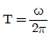
85. 그림과 같이 질량 100kg의 상자를 동마찰계수가 μ1=0.2인 길이 2.0m의 바닥 a와 동마찰계수가 μ2=0.3인 길이 2.5m의 바닥 b를 지나 A 지점에서 C 지점까지 밀려고 한다. 사람이 하여야 할 일은 약 몇 J인가?
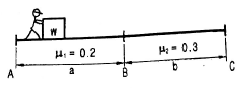
86. 1자유도 질량-스프링계에서 초기조건으로 변위 x0가 주어진 상태에서 가만히 놓아 진동이 일어나나면 진동변위를 나타내는 식은? (단, wn은 계의 고유진동수이고, t는 시간이다.)
87. 그림과 같이 바퀴가 가로방향(x축 방향)으로 미끄러지지 않고 굴러가고 있을 때 A점의 속력과 그 방향은? (단, 바퀴 중심점의 속도는 v이다.)
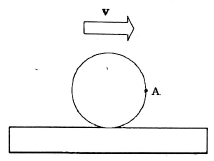
88. 질량 70kg인 군인이 고공에서 낙하산을 펼치고 10m/s의 초기 속도로 낙하하였다. 공기의 저항이 350N일 때 20m 낙하한 후의 속도는 약 몇 m/s인가?
89. 정지된 물에서 0.5m/s의 속도를 낼 수 있는 뱃사공이 있다. 이 뱃사공이 0.1m/s로 흐르는 강물을 거슬러 400m를 올라가는 데 걸리는 시간은?
90. 질량, 스프링, 댑퍼로 구성된 단순화된 1자유도 감쇠계에서 다음 중 그 값만으로 직접 감쇠비(damped ratio, ζ)를 구할 수 있는 것은?
91. 오토콜리메이터의 부속품이 아닌 것은?
92. 이미 가공되어 있는 구명에 다소 큰 강철 볼을 압입하여 통과시켜서 가공물의 표면을 소성 변현시켜 정밀도가 높은 면을 얻는 가공법은?
93. 공작물을 양극으로 하고 전기저항이 적은 Cu, Zn을 음극으로 하여 전해액 속에 넣고 전기를 통하면, 가공물 표면이 전기에 의한 화학적 작용으로 매끈하기 가공되는 가공법은?
94. 다음 빈칸에 들어갈 숫자가 옳게 짝지어진 것은?
95. 호브 절삭날의 나사를 여러 줄로 한 것으로 거친 절삭에 주로 쓰이는 호브는?
96. 다이에 아연, 납, 주석 등의 연질금속을 넣고 제품 형상의 펀치로 타격을 가하여 길이가 짧은 치약튜브, 약품튜브 등을 제작하는 압출방법은?
97. 용접을 기계적인 접합 방법과 비교할 때 우수한 점이 아닌 것은?
98. 제작 개수가 적고, 큰 주물품을 만들 때 재료과 제작비를 절약하기 위해 골격만 목재로 만들고 골격 사이를 점토로 메워 만든 모형은?
99. 절삭가공 시 발생하는 절삭온도 측정방법이 아닌 것은?
100. 나사측정 방법 중 삼침법(Three wire method)에 대한 설명으로 옳은 것은?